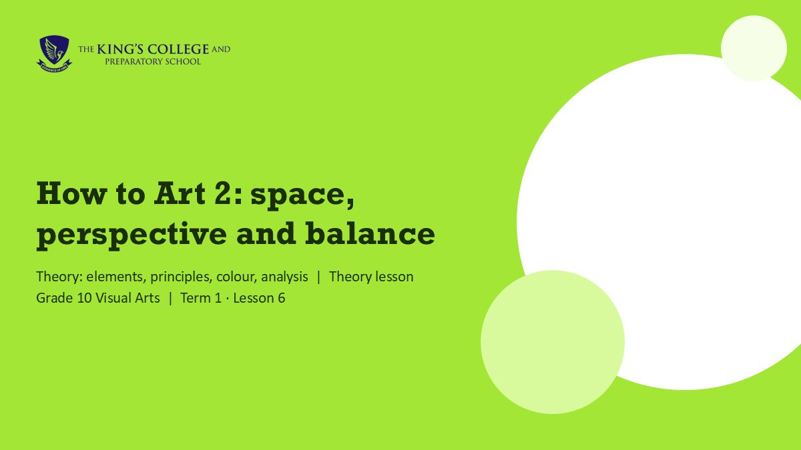

Term 1 · Lesson 6 · Theory lesson
How to Art 2: space, perspective and balance
Start here
Today I will
- Name six ways artists create depth on a flat surface
- Use the terms of one- and two-point perspective
- Tell symmetrical and asymmetrical balance apart
Think first
A sheet of paper is completely flat. How do artists make you feel you could walk into a picture?
Words to know
- Horizon line
- An imagined line at the viewer's eye level, where sky and land seem to meet.
- Vanishing point
- The spot on the horizon where lines running away from you appear to come together.
- Orthogonal
- A line that runs back into the picture towards the vanishing point.
- Foreshortening
- Shortening a form that points towards the viewer so it looks deep.
- Atmospheric perspective
- Making distant things paler, bluer, softer and less detailed.
- Balance
- How the visual weight in an artwork is spread so it feels stable, either symmetrical or asymmetrical.
Slides

Notes
How artists create depth on a flat surface (overlap, size, placement, detail, atmospheric and linear perspective); one- and two-point perspective terms; symmetrical and asymmetrical balance.
Six ways to create depth
- Overlap: An object in front partly covers one behind it.
- Size: Things get smaller as they go further away, like Mount Fuji behind Hokusai's wave.
- Placement: Further objects sit higher up the picture (a raised baseline).
- Detail: Near things are sharp and detailed; far things are simplified.
- Atmospheric perspective: Distance looks paler, bluer and hazier, as in the landscape behind the Mona Lisa.
- Linear perspective: Parallel lines meet at a vanishing point, as in the ceiling of The Last Supper.
Perspective and balance
| One-point / symmetrical | Two-point / asymmetrical |
|---|---|
| One-point: you face the scene; all orthogonals meet at one vanishing point. | Two-point: you look at a corner; there are two vanishing points on the horizon. |
| Feels ordered, calm and centred. | Feels more dynamic and natural. |
| Symmetrical balance: both halves are almost mirror images, as in The Last Supper. | Asymmetrical balance: different things balance each other, as the big wave does with small Fuji. |
| Suits formal, sacred or still subjects. | Suits movement, energy and everyday scenes. |
Remember
Everything that runs away from you heads for the vanishing point.
Practical
You need: Theory booklet, ruler, pencil
Spot the depth, draw the box
- In your VJ, list the depth methods you can see in The Last Supper, with where each one appears.
- Do the same for The Great Wave off Kanagawa.
- Say in one sentence whether each artwork has symmetrical or asymmetrical balance, and why.
- Draw a horizon line and one vanishing point; draw a box in one-point perspective.
- Draw a new horizon line with two vanishing points; draw a box in two-point perspective.
- Label the horizon line, vanishing points and orthogonals on both boxes.
Test yourself
- What is an orthogonal?
- How many vanishing points does two-point perspective have?
- Name two signs of atmospheric perspective.
Show answers
1. A line that recedes towards the vanishing point. 2. Two, both on the horizon line. 3. Any two of: paler, bluer, softer, less detailed in the distance.
Finished early?
Mountains into the distance
Show depth with nothing but a pencil and the methods from today.
- Draw three overlapping rows of hills or mountains across a VJ page.
- Make the front row darkest and most detailed, and each row behind paler, softer and simpler.
- Place the furthest row highest on the page.
- Label every depth method you used: overlap, size, placement, detail, atmospheric perspective.